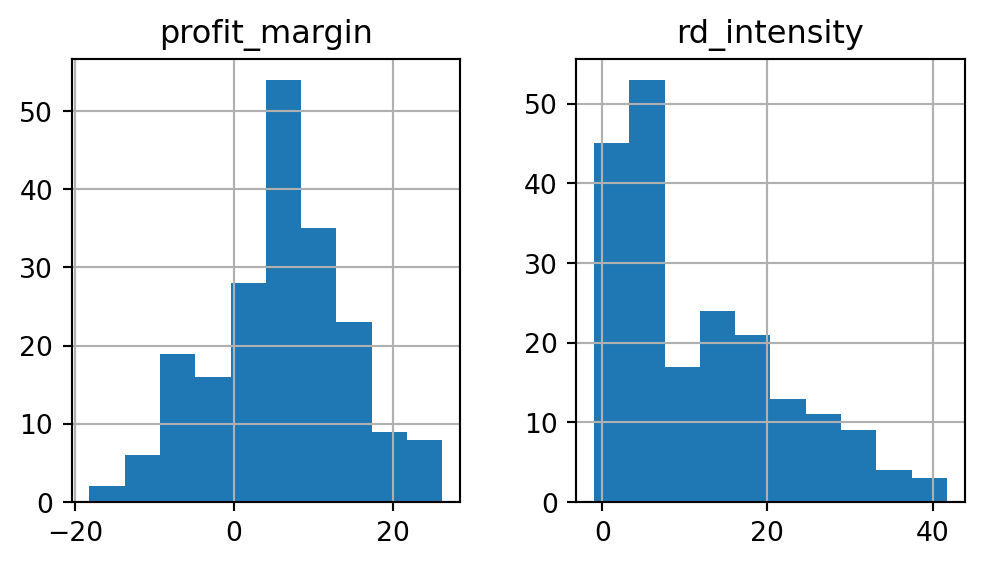
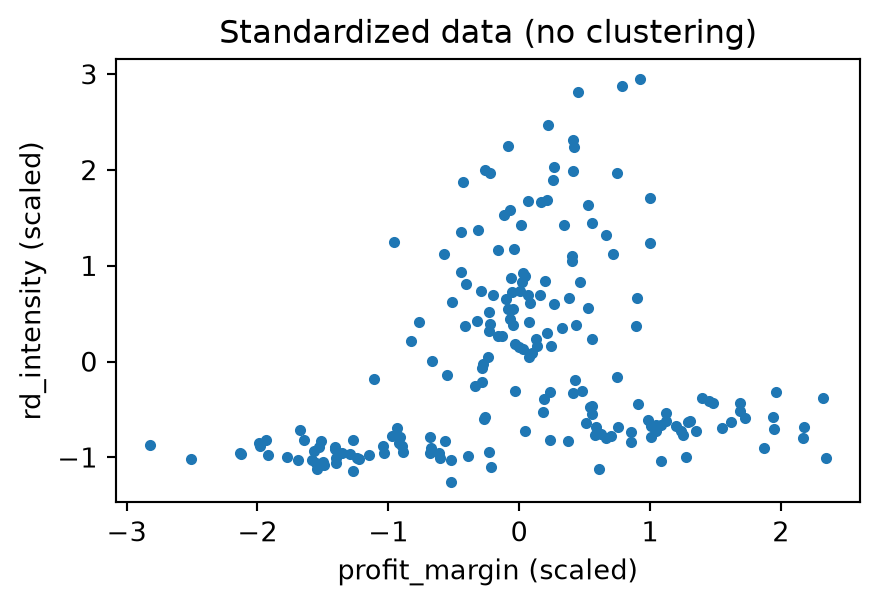
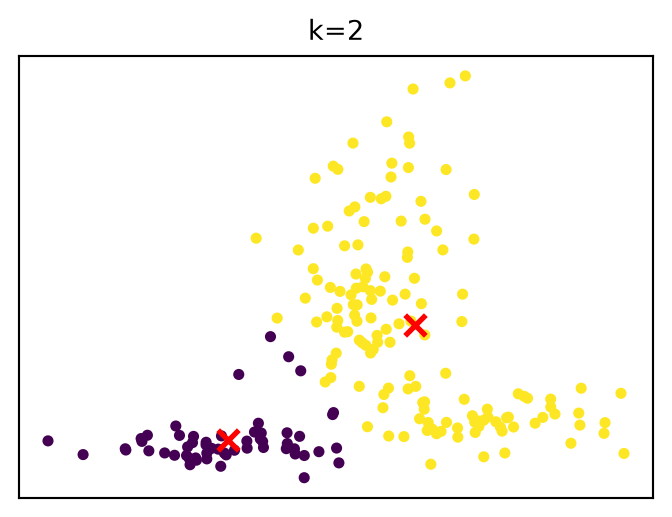
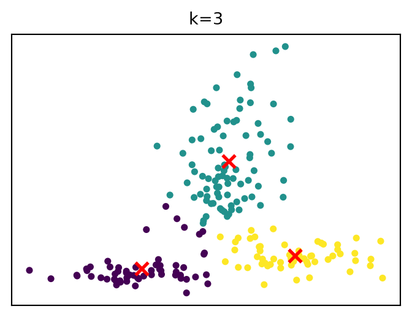
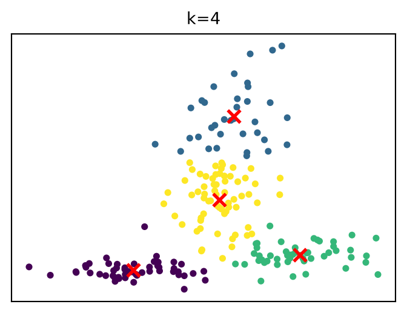
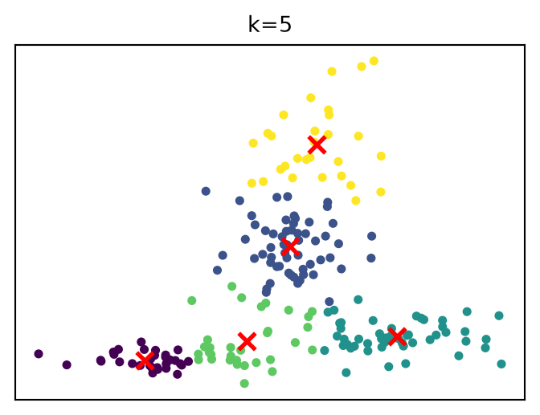
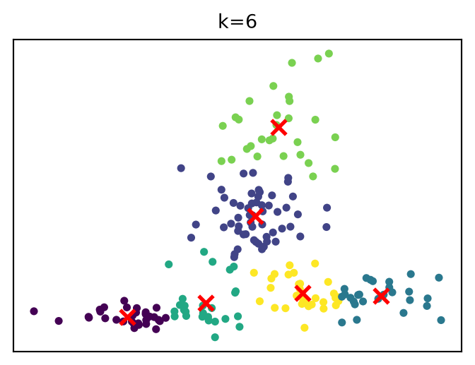
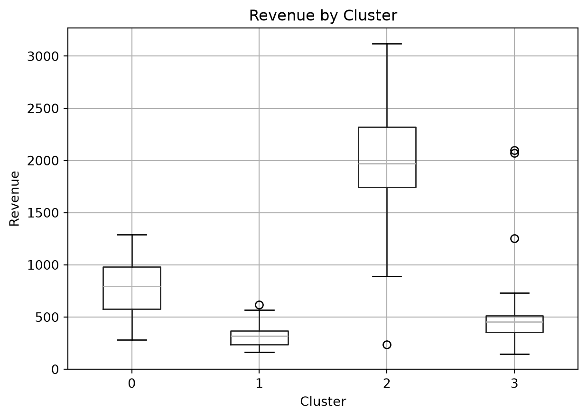

import pandas as pd
market_data_log_df = pd.read_csv("data/market_data_log.csv")
market_data_log_df.head()Exercise 2: Data preparation and exploration
In this notebook, we cover:
| Exercise part | Time (min) |
|---|---|
| Data structuring I | 15 |
| Data structuring II | 20 |
| Data cleansing | 20 |
| EDA: Clustering | 25 |
| Wrap-up | 10 |
| Overall | 90 |
Recommended workflow:
- ✏️ Think & plan first: In the PDF, draft your answers and outline the transformation steps before coding
- 💻 Then code: Implement your solution in the Jupyter Notebook
The Jupyter Notebook is available in the Codespace (repository) here:
https://github.com/fs-ise/analytics-and-big-data-notebooksFor the pandas library, refer to this cheat sheet.
Part 1: Data structuring I
We start with the market_data_log.csv dataset.
| timestamp | logger_sys | Record | |
|---|---|---|---|
| 0 | 2024-10-16 00:00:00 | FIN-PIPE-V1 | SAP-DE-Tech-2023Q1-MarketCap-1154.9B |
| 1 | 2023-04-25 00:00:00 | FIN-PIPE-V1 | SAP-DE-Tech-2023Q1-Revenue-475.6B |
| 2 | 2023-01-26 00:00:00 | FIN-PIPE-V1 | SAP-DE-Tech-2023Q1-EBITDA-146.7B |
| 3 | 2023-10-09 00:00:00 | FIN-PIPE-V1 | SAP-DE-Tech-2023Q2-MarketCap-1816.0B |
| 4 | 2023-09-08 00:00:00 | FIN-PIPE-V1 | SAP-DE-Tech-2023Q2-Revenue-82.2B |
Tasks
Identify:
- Values: ________________
- Observations: ________________
- Variables: ________________
- Units of observation: ________________
Draft the tidy structure of the dataset:
- Fill in the column names and at least 3 example rows.
- Describe how the dataset should be transformed.
- (Optional challenge): Implement the transformation in Python (pandas)
import pandas as pd
market_data_df = pd.read_csv("data/market_data_log.csv")
# Your solution (in Jupyter notebook)
# Note: you may need string operations
NoteExpectations in the exam
| Grade | Expectations |
|---|---|
| 1 (Best) | Recommend how to fix the dataset using appropriate transformations, e.g., describe restructuring steps, select the correct method from examples, or provide pseudocode. |
| 2 | Evaluate and justify the decision using tidy data principles, e.g., “This is not tidy because column 2 contains two variables instead of one.” |
| 3 | Apply tidy data principles to evaluate a dataset (correctly identify whether it is tidy or not). |
| 4 (Pass) | Understand and reproduce the principles of tidy data (e.g., each variable in a column, each observation in a row). |
Note: Even for the best grade, you are not expected to write fully functional code from memory. Still, practicing with code will help you build a deeper conceptual understanding.
Solution
1. Identify:
- Values: Examples: 2024-10-16 00:00:00, FIN-PIPE-V1, SAP, DE, 2023Q1, 1154.9
- Observations: Individual logged measurements for a specific firm and period
- Variables: Timestamp, Logger system, Firm, Country, Sector, Period, MarketCap, Revenue, EBITDA
- Units of observation: One logged firm–period record (aggregating multiple metrics)
2. Draft the tidy structure of the dataset (wide format):
| timestamp | logger_sys | Firm | Country | Sector | Period | MarketCap | Revenue | EBITDA |
|---|---|---|---|---|---|---|---|---|
| 2024-10-16 00:00:00 | FIN-PIPE-V1 | SAP | DE | Tech | 2023Q1 | 1154.9B | 475.6B | 146.7B |
| 2023-10-09 00:00:00 | FIN-PIPE-V1 | SAP | DE | Tech | 2023Q2 | 1816.0B | 82.2B | |
| … | … | … | … | … | … | … | … | … |
3. Describe how the dataset should be transformed.
Parse encoded column:
- The
Recordcolumn contains multiple variables concatenated with- - Split into:
Firm,Country,Sector,Period,Metric,Value
- The
Reshape (long → wide):
- Pivot the
Metriccolumn into separate columns (MarketCap,Revenue,EBITDA, …) - Use
Valueas cell entries
- Pivot the
Optional refinement:
- Convert
Valueinto numeric format (e.g., removeBand cast to float) - Keep or drop
timestampdepending on whether it represents data collection or observation time
- Convert
4. (Optional challenge): Implement the transformation in Python (pandas)
import pandas as pd
# Load data
market_data_df = pd.read_csv("data/market_data_log.csv")
# Split encoded column
split_cols = market_data_df["Record"].str.split("-", expand=True)
split_cols.columns = ["Firm", "Country", "Sector", "Period", "Metric", "Value"]
# Combine with original dataframe
df = pd.concat([market_data_df, split_cols], axis=1)
# Pivot to wide format
df_wide = (
df.pivot_table(
index=["timestamp", "logger_sys", "Firm", "Country", "Sector", "Period"],
columns="Metric",
values="Value",
aggfunc="first"
)
.reset_index()
)
df_wide.head()| Metric | timestamp | logger_sys | Firm | Country | Sector | Period | EBITDA | MarketCap | Revenue |
|---|---|---|---|---|---|---|---|---|---|
| 0 | 2023-01-01 00:00:00 | FIN-PIPE-V1 | LVMH | FR | Luxury | 2023Q4 | 26.7B | 779.7B | 228.0B |
| 1 | 2023-01-04 00:00:00 | FIN-PIPE-V1 | HSBC | UK | Finance | 2023Q3 | 190.1B | 184.1B | 144.1B |
| 2 | 2023-01-07 00:00:00 | FIN-PIPE-V1 | BMW | DE | Automotive | 2024Q4 | 99.3B | 1705.8B | 386.6B |
| 3 | 2023-01-08 00:00:00 | FIN-PIPE-V1 | Total | EU | Market | 2024Q3 | 102.0B | 1004.9B | 215.6B |
| 4 | 2023-01-12 00:00:00 | FIN-PIPE-V1 | Shell | UK | Energy | 2024Q2 | 17.6B | 2272.5B | 191.2B |
Part 2: Data structuring II
Dataset sales_data_channels_full_year.csv
import pandas as pd
sales_data_df = pd.read_csv("data/sales_data_channels_full_year.csv")
sales_data_df.head()| Customer_ID | Region | Jan_Online | Jan_Store | Feb_Online | Feb_Store | Mar_Online | Mar_Store | Apr_Online | Apr_Store | … | Aug_Online | Aug_Store | Sep_Online | Sep_Store | Oct_Online | Oct_Store | Nov_Online | Nov_Store | Dec_Online | Dec_Store | |
|---|---|---|---|---|---|---|---|---|---|---|---|---|---|---|---|---|---|---|---|---|---|
| 0 | ACC-E0IFD0 | APAC | 215 | 201 | 240 | 73 | 80 | 184 | 224 | 240 | … | 182 | 180 | 108 | 154 | 278 | 76 | 85 | 211 | 148 | 132 |
| 1 | ACC-DPBHSA | EU | 315 | 108 | 251 | 163 | 133 | 245 | 170 | 194 | … | 300 | 157 | 289 | 233 | 173 | 121 | 172 | 213 | 260 | 158 |
| 2 | CUST-ZZPQK5 | APAC | 142 | 167 | 195 | 81 | 175 | 107 | 296 | 210 | … | 101 | 221 | 141 | 116 | 142 | 109 | 182 | 55 | 258 | 124 |
| 3 | CUST-ZMF8MD | APAC | 218 | 209 | 154 | 224 | 205 | 163 | 124 | 206 | … | 83 | 228 | 264 | 172 | 235 | 223 | 239 | 88 | 285 | 178 |
| 4 | CUST-MMJBQE | EU | 180 | 145 | 212 | 135 | 217 | 124 | 231 | 190 | … | 253 | 151 | 115 | 78 | 159 | 194 | 140 | 219 | 111 | 137 |
5 rows × 26 columns
Tasks
Identify:
- Values: ________________
- Observations: ________________
- Variables: ________________
- Units of observation: ________________
Draft the tidy structure of the dataset:
- Describe how the dataset should be transformed.
- (Optional challenge): Implement the transformation in Python (pandas)
import pandas as pd
market_data_df = pd.read_csv("data/market_data_log.csv")
# Your solution (in Jupyter notebook)Solution
1. Identify:
- Values: Numerical sales values (215, 201, 240, …)
- Observations: Individual sales measurements for a specific customer, month, and channel
- Variables: CustomerID, Region, Month, Channel, Sales
- Units of observation: A customer–month–channel combination
2. Draft the tidy structure of the dataset:
| Customer_ID | Region | Month | Channel | Sales |
|---|---|---|---|---|
| CUST-AB12CD | EU | Jan | Online | 120 |
| CUST-AB12CD | EU | Jan | Store | 95 |
| CUST-AB12CD | EU | Feb | Online | 135 |
3. Describe how the dataset should be transformed.
- Reshape (wide → long): Convert all monthly/channel columns into two columns
- Split the combined column (Month, Channel)
4. (Optional challenge): Implement the transformation in Python (pandas)
import pandas as pd
# Load data
sales_data_df = pd.read_csv("data/sales_data_channels_full_year.csv")
# Step 1: reshape to long format
tidy_df = sales_data_df.melt(
id_vars=["Customer_ID", "Region"],
var_name="Month_Channel",
value_name="Sales"
)
# Step 2: split Month and Channel
tidy_df[["Month", "Channel"]] = tidy_df["Month_Channel"].str.split("_", expand=True)
# Step 3: drop Month_Channel
tidy_df.drop(columns=["Month_Channel"], inplace=True)
tidy_df.head()| Customer_ID | Region | Sales | Month | Channel | |
|---|---|---|---|---|---|
| 0 | ACC-E0IFD0 | APAC | 215 | Jan | Online |
| 1 | ACC-DPBHSA | EU | 315 | Jan | Online |
| 2 | CUST-ZZPQK5 | APAC | 142 | Jan | Online |
| 3 | CUST-ZMF8MD | APAC | 218 | Jan | Online |
| 4 | CUST-MMJBQE | EU | 180 | Jan | Online |
Part 3: Data cleansing
Dataset messy_customer_data.csv
import pandas as pd
customers_df = pd.read_csv("data/messy_customer_data.csv")
customers_df.head()| customer_id | date_of_birth | income | gender | signup_date | country | |
|---|---|---|---|---|---|---|
| 0 | CUST_00000001809 | 1980-04-09 | 4896 USD | M | 2026-12-14 | USA |
| 1 | CUST_00000000695 | 1945-08-02 | 7029 | F | 2023-11-26 | BR |
| 2 | CUST_00000000907 | 1971-07-25 | 6432 | F | 2024-06-25 | Austria |
| 3 | CUST_00000000545 | 2000-03-01 | 6107 | M | 2023-06-29 | JP |
| 4 | CUST_00000001848 | 1943-09-06 | 7655 | F | 2027-01-22 | Italy |
| 5 | CUST_00000001567 | 1980-09-14 | 2244 | F | 2026-04-16 | CH |
| 6 | CUST_00000001573 | 1950-04-07 | 3262 | F | 2026-04-22 | India |
| 7 | CUST_00000000945 | 1989-08-23 | 3976 | M | 2024-08-02 | BR |
| 8 | CUST_00000000819 | 1946-03-09 | 3077 USD | F | 2024-03-29 | NL |
| 9 | CUST_00000000830 | 1981-03-30 | NaN | M | 2024-04-09 | BR |
| 10 | CUST_00000001531 | 1995-03-08 | 4667 | F | 2026-03-11 | DE |
| 11 | CUST_00000000979 | 1990-01-24 | NaN | F | 2024-09-05 | Switzerland |
| 12 | CUST_00000001576 | 1989-06-18 | 2920 | F | 2026-04-25 | Brazil |
| 13 | CUST_00000000786 | 1994-06-24 | 6613 | F | 2024-02-25 | IT |
| 14 | CUST_00000000071 | 1960-11-19 | 4613 | F | 2022-03-12 | FR |
| 15 | CUST_00000001007 | 1989-07-09 | 4551 | F | 2024-10-03 | BR |
| 16 | CUST_00000000189 | 1969-01-29 | 6779 | M | 2022-07-08 | China |
| 17 | CUST_00000001670 | 1987-08-04 | 7295 | M | 2026-07-28 | Munch |
| 18 | CUST_00000001270 | 1969-02-06 | 4717 | F | 2025-06-23 | USA |
| 19 | CUST_00000001305 | 1989-01-13 | 7954 | F | 2025-07-28 | ES |
Tasks
In this part, move from detecting problems to making the dataset analysis-ready. The goal is not only to spot errors, but also to document a reproducible cleaning strategy.
1. Identify scales of variables
- What type of scale is each variable? Run the following and assign
nominal,ordinal,interval, orratio.
customer_df = pd.read_csv("data/messy_customer_data.csv")
customer_df.info()What type of scale should each variable be? Assign
nominal,ordinal,interval, orratio.- customer_id: ________________
- date_of_birth: ________________
- income: ________________
- gender: ________________
- signup_date: ________________
- country: ________________
2. Analyze data quality
Examine the dataset data/messy_customer_data.csv and run the following:
customer_df.describe()| customer_id | date_of_birth | income | gender | signup_date | country | |
|---|---|---|---|---|---|---|
| count | 2050 | 1951 | 1948 | 2050 | 1999 | 2050 |
| unique | 2000 | 1825 | 1668 | 6 | 1945 | 33 |
| top | CUST_00000000945 | 1890-01-01 | 200000 | F | 2023-13-01 | AT |
| freq | 2 | 10 | 5 | 995 | 5 | 93 |
- Summarize all data quality issues you observe (open the data/messy_customer_data.csv).
3. Propose data preparation steps
- For each data quality issue, suggest how you would address it.
4. (Optional challenge) Implement in Python (pandas)
- Implement the data preparation steps in Python.
- Run the code after each step and inspect the results.
# Your solution (in Jupyter notebook)Note: Check how the customer_df changes after each preparation step!
Solution
1. Identify scales of variables
What type of scale is each variable?
All are
nominal(strings).What type of scale should each variable be? Assign
nominal,ordinal,interval, orratio.- customer_id: nominal
- date_of_birth: interval
- income: ratio
- gender: nominal
- signup_date: interval
- country: nominal
2. Analyze data quality
Examine the dataset data/messy_customer_data.csv and run the following:
customer_df.describe()| customer_id | date_of_birth | income | gender | signup_date | country | |
|---|---|---|---|---|---|---|
| count | 2050 | 1951 | 1948 | 2050 | 1999 | 2050 |
| unique | 2000 | 1825 | 1668 | 6 | 1945 | 33 |
| top | CUST_00000000945 | 1890-01-01 | 200000 | F | 2023-13-01 | AT |
| freq | 2 | 10 | 5 | 995 | 5 | 93 |
Summarize all data quality issues you observe.
Missing values
date_of_birthincomesignup_date
Implausible / invalid values
date_of_birth(e.g., 1890, future dates like 2030)signup_date(e.g., invalid dates like 2023-13-01)income(e.g., negative values)
- Inconsistent formats
income(e.g., “5000”, “5000 EUR”, “5000 USD”)signup_date(multiple date formats)
- Outliers
income(e.g., very high values like 200000)
- Inconsistent categorical values
gender(M, F, Male, Female, m, f)country(codes, names, typos: DE, Germany, Ger, U.S., Brasil, etc.)
- Duplicates
- Duplicate records identifiable via repeated
customer_id(high frequency)
- Duplicate records identifiable via repeated
3. Propose data preparation steps
For each data quality issue, suggest how you would address it.
Missing values: impute (e.g., median for income) or remove rows
Implausible / invalid values: filter out or correct (e.g., negative income, invalid dates)
Inconsistent formats: standardize (convert income to numeric, parse dates to datetime)
Outliers: inspect and cap or remove extreme values
Inconsistent categorical values: unify categories (e.g., gender labels, country formats)
Duplicates: remove duplicates based on
customer_id
4. (Optional challenge) Implement in Python (pandas)
import pandas as pd
customer_df = pd.read_csv("data/messy_customer_data.csv")
# --- Income: clean + numeric ---
customer_df["income"] = (
customer_df["income"]
.astype(str)
.str.replace(r"\s*(USD|EUR)", "", regex=True)
)
customer_df["income"] = pd.to_numeric(customer_df["income"], errors="coerce")
# --- Missing values (income) ---
customer_df["income"] = customer_df["income"].fillna(customer_df["income"].median())
# --- Dates: parse ---
customer_df["date_of_birth"] = pd.to_datetime(customer_df["date_of_birth"], errors="coerce")
customer_df["signup_date"] = pd.to_datetime(customer_df["signup_date"], errors="coerce")
# --- Invalid / implausible values ---
today = pd.Timestamp.today()
# remove future DOB and very old values
customer_df = customer_df[
(customer_df["date_of_birth"] < today) &
(customer_df["date_of_birth"] > pd.Timestamp("1900-01-01"))
]
# remove invalid signup dates (future or NaT)
customer_df = customer_df[
(customer_df["signup_date"] <= today)
]
# remove negative income
customer_df = customer_df[customer_df["income"] >= 0]
# --- Outliers (simple cap) ---
upper_cap = customer_df["income"].quantile(0.99)
customer_df["income"] = customer_df["income"].clip(upper=upper_cap)
# --- Gender standardization ---
customer_df["gender"] = customer_df["gender"].replace({
"M": "Male", "m": "Male",
"F": "Female", "f": "Female"
})
# --- Country standardization ---
country_map = {
"Germany": "DE", "Ger": "DE", "DEU": "DE",
"USA": "US", "U.S.": "US",
"UK ": "UK",
"France": "FR",
"Spain": "ES",
"Italy": "IT",
"Netherlands": "NL",
"Switzerland": "CH",
"Austria": "AT",
"China": "CN",
"Japan": "JP",
"India": "IN",
"Brazil": "BR", "Brasil": "BR",
"Canada": "CA",
"Munch": "DE"
}
customer_df["country"] = customer_df["country"].replace(country_map)
# --- Remove duplicates ---
customer_df = customer_df.drop_duplicates(subset=["customer_id"])
customer_df.head()| customer_id | date_of_birth | income | gender | signup_date | country | |
|---|---|---|---|---|---|---|
| 1 | CUST_00000000695 | 1945-08-02 | 7029.0 | Female | 2023-11-26 | BR |
| 2 | CUST_00000000907 | 1971-07-25 | 6432.0 | Female | 2024-06-25 | AT |
| 3 | CUST_00000000545 | 2000-03-01 | 6107.0 | Male | 2023-06-29 | JP |
| 7 | CUST_00000000945 | 1989-08-23 | 3976.0 | Male | 2024-08-02 | BR |
| 8 | CUST_00000000819 | 1946-03-09 | 3077.0 | Female | 2024-03-29 | NL |
Part 4: EDA: Clustering
Now that the data is structured and cleaned, we explore whether companies group into similar patterns. Clustering helps us move from preparation to insight generation: instead of looking at firms one by one, we ask whether there are recurring profiles in the data.
Dataset: firm_data.csv
import pandas as pd
firm_data_df = pd.read_csv("data/firm_data.csv")
firm_data_df.head()| company_id | sector | revenue | profit_margin | growth_rate | debt_ratio | market_cap | rd_intensity | |
|---|---|---|---|---|---|---|---|---|
| 0 | FIRM-0095 | Healthcare | 2117.569743 | 13.382162 | 6.053507 | 0.555974 | 12426.889897 | 3.308879 |
| 1 | FIRM-0015 | Healthcare | 457.538045 | 10.139487 | 21.504950 | 0.350252 | 5779.074618 | 8.710809 |
| 2 | FIRM-0030 | Industry | 463.847307 | 4.131422 | 13.237034 | 0.356084 | 4451.965515 | 15.719744 |
| 3 | FIRM-0158 | Finance | 347.980562 | 9.573304 | 16.117482 | 0.472141 | 3256.609038 | 31.989645 |
| 4 | FIRM-0128 | Tech | 804.239654 | 0.165357 | -3.346796 | 0.761088 | 1825.004761 | 2.082579 |
Tasks
1. Prepare the data for clustering
We decide to use profit_margin and rd_intensity to cluster firms. In a first step, create a dataframe X consisting of values for these two variables:
import pandas as pd
df_firm_data = pd.read_csv("data/firm_data.csv")
# Your solution (in Jupyter notebook)
# Print X at the endBefore clustering, do a quick exploratory check so you know what kind of patterns you are looking for.
X.describe()df_firm_data[["profit_margin", "rd_intensity"]].hist(figsize=(6, 3))Considering that k-means is sensitive to different measurement scale, we need to standardize the values. This ensures that they have approximately equal influence on the clusters.
Run the following code and observe how the scale of both variables changes:
from sklearn.preprocessing import StandardScaler
scaler = StandardScaler()
X = scaler.fit_transform(X)
XBefore running a clustering algorithm, lets’s view the data in a scatterplot:
import matplotlib.pyplot as plt
plt.scatter(X[:, 0], X[:, 1], s=10)
plt.title("Raw data (no clustering)")
plt.show()How many clusters would you expect? Briefly justify your answer based on the plot.
2. Apply K-Means clustering
- Next, run the k-means clustering algorithm for different values of
k.
from sklearn.cluster import KMeans
# Your solution (in Jupyter notebook)
# Note: consider the names of variables and objects used in the rest of the code
# Run the whole code cell to fit KMeans and plot it
plt.figure(figsize=(3.6, 2.8))
plt.scatter(X[:, 0], X[:, 1], c=labels, s=10)
plt.scatter(
kmeans.cluster_centers_[:, 0],
kmeans.cluster_centers_[:, 1],
c='red', marker='x', s=60, linewidth=2
)
plt.title(f"k={k}", fontsize=10)
plt.xticks([])
plt.yticks([])
plt.tight_layout()
plt.show()- Try different values of K (e.g., 2–10). Which number of clusters seems appropriate?
3. Add cluster labels to the dataset
- Assign the cluster labels returned by the k-means algorithm to the original dataframe (
df_firm_data).
# Your solution (in Jupyter notebook)4. Create grouped boxplots
- Generate a boxplot, grouped according to the clusters, to compare differences in
revenue. - Try to complete the task relying only on the pandas documentation for boxplots.
import matplotlib.pyplot as plt
# Your solution (in Jupyter notebook)Solution
1. Prepare the data for clustering
We use only profit_margin and rd_intensity for clustering:
import pandas as pd
df_firm_data = pd.read_csv("data/firm_data.csv")
X = df_firm_data[["profit_margin", "rd_intensity"]]
X.head()| profit_margin | rd_intensity | |
|---|---|---|
| 0 | 13.382162 | 3.308879 |
| 1 | 10.139487 | 8.710809 |
| 2 | 4.131422 | 15.719744 |
| 3 | 9.573304 | 31.989645 |
| 4 | 0.165357 | 2.082579 |
Exploratory check
X.describe()| profit_margin | rd_intensity | |
|---|---|---|
| count | 200.000000 | 200.000000 |
| mean | 6.038353 | 11.782773 |
| std | 8.606380 | 10.182518 |
| min | -18.193454 | -1.006377 |
| 25% | 1.165900 | 3.438376 |
| 50% | 6.300245 | 7.883626 |
| 75% | 11.151334 | 18.519914 |
| max | 26.183842 | 41.741721 |
df_firm_data[["profit_margin", "rd_intensity"]].hist(figsize=(6, 3))array([[<Axes: title={'center': 'profit_margin'}>,
<Axes: title={'center': 'rd_intensity'}>]], dtype=object)
These summaries and histograms help us understand the distribution and scale of the variables.
Standardization
Since k-means is sensitive to scale differences, we standardize the variables:
from sklearn.preprocessing import StandardScaler
scaler = StandardScaler()
X_scaled = scaler.fit_transform(X)
X_scaled[:3]array([[ 0.85543951, -0.83428853],
[ 0.47771828, -0.30244699],
[-0.22212786, 0.38761056]])Scatterplot (before clustering)
import matplotlib.pyplot as plt
plt.figure(figsize=(5, 3))
plt.scatter(X_scaled[:, 0], X_scaled[:, 1], s=10)
plt.title("Standardized data (no clustering)")
plt.xlabel("profit_margin (scaled)")
plt.ylabel("rd_intensity (scaled)")
plt.show()
Interpretation: From the scatterplot, we might expect a small number of clusters (e.g., 3–5), depending on visible groupings.
2. Apply K-Means clustering
We try different values of k and visually inspect the cluster structure:
from sklearn.cluster import KMeans
for k in range(2, 7):
kmeans = KMeans(n_clusters=k, random_state=42)
labels = kmeans.fit_predict(X_scaled)
plt.figure(figsize=(3.6, 2.8))
plt.scatter(X_scaled[:, 0], X_scaled[:, 1], c=labels, s=10)
plt.scatter(
kmeans.cluster_centers_[:, 0],
kmeans.cluster_centers_[:, 1],
c="red", marker="x", s=60, linewidth=2
)
plt.title(f"k={k}", fontsize=10)
plt.xticks([])
plt.yticks([])
plt.tight_layout()
plt.show()




Conclusion: A value around k = 4 appears to provide a reasonable balance between simplicity and structure.
3. Add cluster labels to the dataset
We now fit the final model and store the cluster labels:
k = 4
kmeans = KMeans(n_clusters=k, random_state=42)
labels = kmeans.fit_predict(X_scaled)
df_firm_data["cluster"] = labels
df_firm_data.head()| company_id | sector | revenue | profit_margin | growth_rate | debt_ratio | market_cap | rd_intensity | cluster | |
|---|---|---|---|---|---|---|---|---|---|
| 0 | FIRM-0095 | Healthcare | 2117.569743 | 13.382162 | 6.053507 | 0.555974 | 12426.889897 | 3.308879 | 2 |
| 1 | FIRM-0015 | Healthcare | 457.538045 | 10.139487 | 21.504950 | 0.350252 | 5779.074618 | 8.710809 | 3 |
| 2 | FIRM-0030 | Industry | 463.847307 | 4.131422 | 13.237034 | 0.356084 | 4451.965515 | 15.719744 | 3 |
| 3 | FIRM-0158 | Finance | 347.980562 | 9.573304 | 16.117482 | 0.472141 | 3256.609038 | 31.989645 | 1 |
| 4 | FIRM-0128 | Tech | 804.239654 | 0.165357 | -3.346796 | 0.761088 | 1825.004761 | 2.082579 | 0 |
4. Create grouped boxplots
We compare revenue across clusters:
import matplotlib.pyplot as plt
df_firm_data.boxplot(column="revenue", by="cluster")
plt.title("Revenue by Cluster")
plt.suptitle("")
plt.xlabel("Cluster")
plt.ylabel("Revenue")
plt.show()
Interpretation: The boxplots reveal how revenue differs across clusters, helping to characterize the identified firm profiles.
Wrap-up
🎉🎈 You have completed the notebook - good work! 🎈🎉
In this notebook, we have learned to
- Structure data in a tidy format
- Prepare and explore datasets
- Apply clustering methods
NoteStop the Codespace
Remember to stop your Codespace here.
TipSession 2 survey
Before you wrap up, please complete the Session 2 survey here: https://forms.gle/XfRmmVbf1yaBwrky9. Thank you 🙏